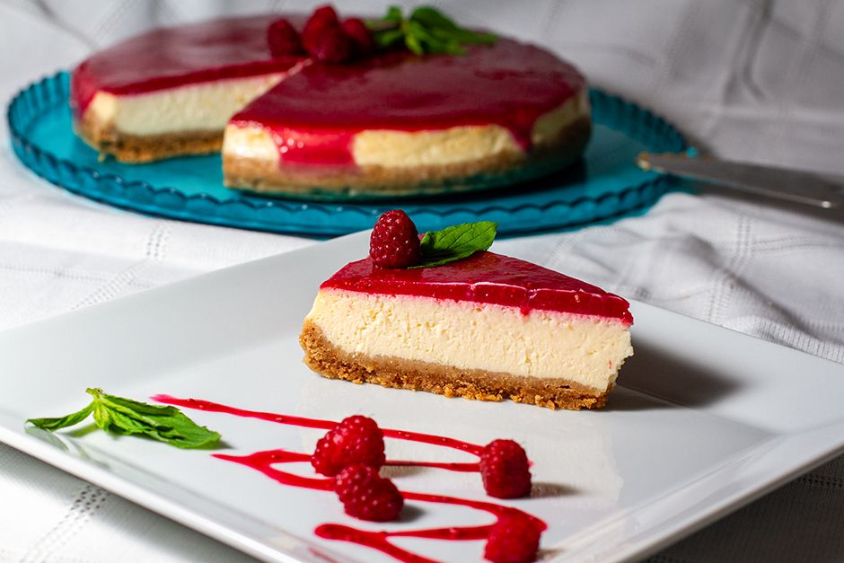
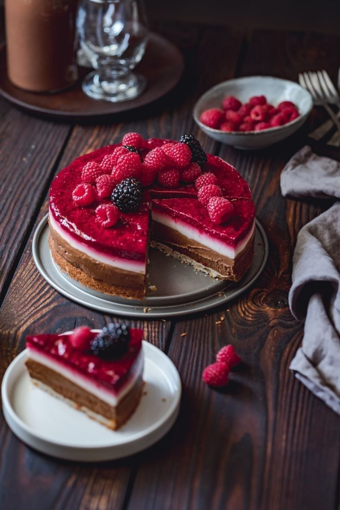

30dk Hazırlık | 1 saat Pişirme
restaurant
Kırmızı sosu ile iştah açan, görünümü ile herkesi büyüleyecek bir tarifimiz var! Frambuazlı cheesecake tarifi ile çay saatlerinizi şenlendirecek, cheesecake sevmeyenlere bile bu lezzeti sevdireceksiniz. Hazırlaması sizi biraz yoracak olsa da sonrasında çıkan şahane tatlı ile gözleriniz ve damaklarınız bayram edecek. Karşınızda yemelere doyamayacağınız tariflerimizden: Frambuazlı cheesecake tarifimiz.
Yulaflı bisküviler ile yumuşak bir altlık, krema ve labne ile sade bir harç hazırlıyoruz. Fırında uzun bir süre pişiriyoruz. Frambuaz ile hazırlanmış sosu da üzerine gezdirip, sofralarda baş köşeye kurulmayı hak eden bir tatlı ortaya çıkarıyoruz. Adeta bir sanat eseri görünümündeki yemelere doyum olmayacak frambuazlı cheesecake'niz hazır!
Sizi biraz bekletecek ama bir kaşığı ile yemelere doyamayacağınız tarifimiz için mutfağa geçin ve hemen hazırlıklara başlayın. Şimdiden ellerinize sağlık

Frambuazlı Cheesecake Tarifi İçin Malzemeler
Kreması İçin:
- 1 yemek kaşığı nişasta
- 3 adet yumurta
- 1 adet limon kabuğu rendesi (ve suyu)
- 1 su bardağı şeker
- 1 kutu sıvı krema
- 600 gram labne peyniri
- 1 paket vanilya
Tabanı İçin:
- 2 paket tam buğdaylı bisküvi
- 125 gram eritilmiş tereyağı
Sosu İçin:
- 1/2 su bardağı şeker
- 2 yemek kaşığı mısır nişastası
- 1 su bardağı su
- 1 paket vanilya
- 300 gram frambuaz(donmuş ya da taze)

Frambuazlı Cheesecake Tarifi Nasıl Yapılır?
- Alt tabanı için, bisküvileri ve fındığı rondoda un gibi yapana kadar çekiyoruz.
- Eritmiş olduğumuz tereyağını ve sütü yavaş yavaş ilave edip alt tabanı hazır hale getiriyoruz.
- Sosu için; frambuaza şekeri ve suyu ilave edip dolapta bir saat bekletiyoruz ve ocağa alıp bir çay bardağı soğuk suyla mısır nişastasını eritip içine ilave edip kaynatmaya başlıyoruz.
- Kaynayınca kısık ateşte 5 dakika daha kaynatıp ocaktan alıp vanilyasını ilave edip ılıyana kadar kabuk tutmaması için hafif karıştırıyoruz ve soğumaya bırakıyoruz.
- Öncelikle alt taban için kelepçeli kalıbımızı iyice yağlayıp hazırlanmış olduğumuz harcı içine bastırarak düzgün ve eşit bir şekilde yerleştirip dolaba koyuyoruz.
- Labne peyniri ayrı bir kapta 3 dakika kadar çırpıyoruz.
- Kremayı da aynı şekilde ayrı bir kapta hafif katılaşana kadar çırpıp 2 sinide aynı kabın içine alıp içine şekeri ilave edip çırpmaya devam ediyoruz.
- Yumurtaları da tek tek ilave edip yaklaşık 5 dakika çırpmaya devam ediyoruz.
- En son unu ve vanilyasını ilave edip dolaptaki harcı çıkarıp üzerine döküyoruz. Bu arada dökmeden önce kalıbın kenarını folyo ile sarıyoruz. Böylelikle uzun süre fırında kaldığı için kenarları yanmamış oluyor.
- Ve kalıba hafifçe vurup içindeki hava kabarcıklarının dışarı çıkmasını sağlayıp önceden ısıtılmış fırında ilk 10 dakika 200 derecede, 10 dakika sonrasında dereceyi 160’a alıp 50 dakika daha pişiriyoruz. Toplamda 1 saat pişirmiş oluyoruz.
- Fırının kapağını pişirme boyunca asla açmıyoruz.
- Ayrıca fırının içine mutlaka ısıya dayanıklı su dolu orta büyüklükte bir kap koyuyoruz. Böylelikle çatlamasını önlüyoruz.
- Ve 1 saat sonra kapağı açtığımızda Cheesecakemiz hafif salladığımızda oynamıyorsa fırını kapatıp kapağını biraz aralayıp ılınmaya bırakıyoruz.
- Ilındıktan sonra fırından çıkarıp 1 saat kadar soğuduktan sonra hazırladığımız sosu üzerine döküp frambuaz parçalarıyla süslüyoruz ve dolapta 1 gece dinlendirip servis yapıyoruz.
Afiyet olsun...